기계설계산업기사 (2005-09-04 기출문제)
1과목: 기계가공법 및 안전관리
1. 직경이 6Cm이고 길이 1m당 1° 의 비틀림각이 생기는 축이 매분 300회 회전할 때의 전달동력은 몇 KM인가? (단, 전단탄성계수 G=80 Gpa이다.)
- 30.2
- 38.4
- 46.5
- 55.8
(정답률: 17%)

2. 길이 L=10m의 단순보에서 그림과 같은 우력이 작용할 때 이 보의 최대 굽힘모멘트(Nㆍm)는 얼마인가?
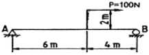
- 60
- 80
- 100
- 120
(정답률: 30%)
3. 전단력이 작용하는 보의 원형단면 지름을 2배로 하면 단면의 최대전단응력은 몇 배로 되는가?
- 1/8
- 1/2
- 1/16
- 1/4
(정답률: 41%)
4. 그림과 같은 외팔보에 자유단 A점에 모멘트 M가 작용할 때 반력 RB는?
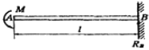
- M
- MㆍL
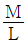
- 0
(정답률: 22%)
5. σx 와 σy 의 2축 응력상태에서 모아(Mohr) 원의 반경을 나타낸 값은?
 (σx-σy)
(σx-σy) (σx+σy)
(σx+σy)- σx-σy
- σx+σy
(정답률: 29%)
6. 직경 10Cm의 단순보의 중앙에 1kN의 집중하중이 작용할 때, 최대 굽힘응력을 50Mpa이내가 되도록 하려면 단순보의 길이를 몇 m로 해야 하는가?
- 19.6
- 28.8
- 39.8
- 44.4
(정답률: 9%)
7. 단면이 일정한 보에서 곡률반지름에 대한 설명 중 옳은 것은?
- 휘어진 보의 각부는 곡률반지름이 모두 같다.
- 굽힘 모멘트가 클수록 곡률반지름은 작게 된다.
- 곡률반지름은 탄성계수에 반비례한다.
- 곡률반지름은 하중에 비례한다.
(정답률: 32%)
8. 직경이 20mm, 길이 2m의 둥근막대의 일단을 고정하고 자유단을 5° 비틀었다면 이 때 생기는 전단응력은 몇 Mpa인가? (단, 전단탄성계수 G=85 Gpa이다.)
- 25.2
- 37.1
- 40.5
- 57.9
(정답률: 40%)
9. 그림과 같은 보에서 반력 RB는 얼마인가?
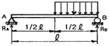
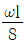
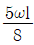
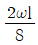
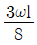
(정답률: 19%)
10. 그림과 같이 선형적으로 변하는 분포하중을 받는 단순보의 반력은?
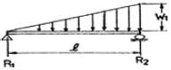
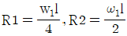
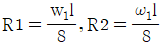
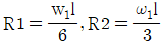
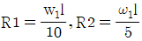
(정답률: 33%)
11. 다음 그림과 같은 사각형 단면에서 Z-Z 축에 관한 단면계수를 구하는 식은?
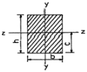
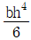
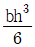
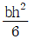
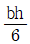
(정답률: 41%)
12. 주평면 (Principal plane)에 대한 설명이다. 옳은것은?
- 주평면은 전단은력과 수직응력의 합이 작용한다.
- 주평면에는 전단응력이 작용하고 수직응력은 작용하지 않는다.
- 주평면에는 전단응력은 작용하지 않고 최대 및 최소의 수직응력만이 작용한다.
- 주평면에는 최대의 수직응력만이 작용하고 최소의 수직응력과 전단응력은 작용하지 않는다.
(정답률: 37%)
13. 길이 225mm, 탄성계수 180KN/mm2 인 재료에 2KN의 압축하중을 작용시켰더니 400N/mm2 의 응력이 발생하였다. 이 재료에 저장된 탄성에너지는 몇 Nㆍmm인가?
- 300
- 400
- 500
- 600
(정답률: 18%)
14. 하단이 고정되고 상단이 자유로운 장주의 임계하중 Pcr을 나타내는 오일러식은? (단. E는 재료의 탄성계수, I는 단면2차 모멘트, l은 장주의 길이이다.)
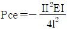
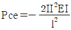
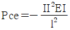
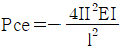
(정답률: 22%)
15. 그림과 같은 황동봉이 있다. 단면적 A 가 1cm2 이고 하중 W1=10RN, W2=5RN이 작용할 때 막대의 늘어난 길이는 몇 cm 인가?
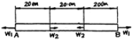
- 0.045
- 0.⑤6
- 0.56
- 0.45
(정답률: 29%)
16. 바깥지름 10cm, 안지름이 5cm인 중공(中空)원형 단면의 단면 2차 모멘트는 몇 cm4인가?(단, 축은 언의 중심을 지난다.)
- 92
- 210
- 325
- 460
(정답률: 14%)
17. 그림과 같은 판재에서 폭 D=20cm, 중앙의 구멍지름 d=8cm이다. 인장하중 P=31360N이 작용할 때 안전율을 10 이라 하면 판의 두께는 몇 cm인가? (단, 판재의 인장강도는 352.8MPa, 응력집중계수는 2.2이다.)
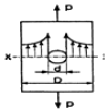
- 0.44
- 0.74
- 1.41
- 1.63
(정답률: 23%)
18. 길이가 100cm인 외팔보의 자유단에 4kN의 집중하중이 작용할 때 최대 처침량은 몇 cm인가? (단, 단면2차모멘트 I=300cm4 , 탄성계수 E=210 GPa이다)
- 21.16
- 2.116
- 0.2116
- 0.02116
(정답률: 25%)
19. 그림과 같은 단순보에서 최대 전단응력은 얼마인가?(단, 단면은 bxh인 직사각형 단면이다.)
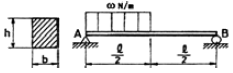
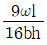
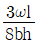
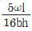
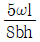
(정답률: 28%)
20. 기둥의 가늘고 긴 정도를 나타내는 무차원비(無次元比)를 세장비라 한다. 지름 18cm,길이 4.5m인 기둥의 세장비는 얼마인가?
- 20
- 50
- 80
- 100
(정답률: 16%)
2과목: 기계제도
21. 주물에 기포(또는 기공)가 생기게 하는 가장 큰 원인은?
- 너무 높은 주입온도
- 가스배출의 불충분
- 너무 빠른 주입속도
- 주형의 표면불량
(정답률: 54%)
22. 공구에 진동을 주고 공작물과 공구사이에 연삭 입자를 두고 전기적 에너지를 기계적 에너지로 변화함으로써 공작물을 정밀하게 다듬는 방법은?
- 전해 연마
- 기어 셰이빙
- 초음파 가공
- 방전 가공
(정답률: 30%)
23. 와이어컷(wire cut) 방전가공과 가장 밀접한 관계가 있는 것은?
- 장식품의 절단가공
- 금속주형가공
- 블랭킹 다이의 구멍가공
- 다이캐스팅 다이가공
(정답률: 18%)
24. 호닝머신에서 내면 가공시 공작물에 대한 호운은 어떤 운동을 하는가?
- 회전 및 직선 왕복운동
- 회전운동
- 상하운동
- 직선 왕복운동
(정답률: 46%)
25. 다이캐스팅 주조에 대한 설명으로 틀린 것은?
- 금형을 사용하므로 제품 크기에 제한이 있다.
- 복잡한 모양과 얇은 주물을 만들 수 있다.
- 주물제품의 정밀도가 좋다.
- 용융점이 높은 금속의 주조가 가능하다.
(정답률: 23%)
26. 맞대기 저항용접법을 분류할 때, 해당되지 않는 것은?
- 스텃 용접법
- 업셋 용접법
- 플래시 용접법
- 맞대기 심 용접법
(정답률: 26%)
27. 강재의 화학 조성을 변화시키지 않고, 작은 볼 (shot)을 표면에 고속으로 분사하여 그 표면을 매끈하게 경화시키는 방법은?
- 금속 침투법
- 침탄 질화법
- 질화법
- 숏피닝법
(정답률: 62%)
28. 컨테이너(container)를 이용하는 가공법은?
- 압출가공
- 인발가공
- 압연가공
- 판금가공
(정답률: 45%)
29. 프레스 가공에서 굽힘가공은?
- 컬링(Curling)
- 트리밍(Trimming)
- 엠보싱(Embossing)
- 셰이빙(Shaving)
(정답률: 32%)
30. 내경 측정에만 이용되는 측정기는?
- 실린더 게이지
- 블록 게이지
- 스냅 게이지
- 측장기
(정답률: 48%)
31. 표면 거칠기의 측정방식이 아닌 것은?
- 촉침식
- 광절단식
- 광파간섭식
- 삼침식
(정답률: 46%)
32. 가공물을 고정할 때, T형홈(T-Slot)이 있는 테이블을 사용하는 기계가 아닌 것은?
- 슬로터
- 플레이너
- 호빙머신
- 세이퍼
(정답률: 56%)
33. 유효 단조면적이 500mm2 이고 변형저항이 15.4kgf/mm2 인 단조작업을 하고자 할때, 기계효율이 0.7이면 단조프레스의 용량은?
- 11 Ton
- 15 Ton
- 17 Ton
- 23 Ton
(정답률: 24%)
34. 소성가공(塑性加工)이 아닌 것은?
- 브로우칭
- 단조
- 인발
- 나사전조
(정답률: 27%)
35. 우연 오차를 줄이는 최선의 방법은?
- 측정기 자체의 오차를 없게 한다.
- 개인 오차를 없게 한다.
- 반복 측정하여 평균한다.
- 온도에 의한 오차를 없게 한다.
(정답률: 66%)
36. 직경이 300mm, 날 수 40개인 정면커터로 50mm×380mm×20mm의 공작물을 밀링에서 가공하고자 한다. 이 때 절삭속도는 18m/min이고, 날 1개당 이송을 0.1mm로 한다면 테이블의 이송 속도는 얼마로 해야 하는가?
- 76.4mm/min
- 83.5mm/min
- 95.4mm/min
- 102.5mm/min
(정답률: 34%)
37. 절삭공구의 절삭날 결손에 대한 종류 중 틀린 것은?
- 브레이킹(breaking)
- 크랙(crack)
- 시어(shear)
- 치핑(chipping)
(정답률: 43%)
38. 구멍용 한계 게이지가 아닌 것은?
- 봉 게이지
- 평형 플러그 게이지
- 스냅 게이지
- 판 플러그 게이지
(정답률: 27%)
39. 전단가공의 분류에 속하지 않는 것은?
- 피어싱(piercing)
- 세이빙(shaving)
- 엠보싱(embossing)
- 노칭(notching)
(정답률: 42%)
40. 용접부의 검사에서 비파괴 검사법은?
- 현미경조직 검사
- 초음파 검사
- 낙하 검사
- 화학분석 검사
(정답률: 52%)
3과목: 기계설계 및 기계재료
41. 다음 중 주철의 장점이 될 수 없는 것은?
- 용융점이 낮고 유동성이 우수하다.
- 연신율이 높은편이다.
- 압축강도가 크다.
- 마찰저항이 우수하다.
(정답률: 35%)
42. 다이캐스팅용 AI 합금으로 요구되는 성질 중 틀린것은?
- 유동성이 좋을 것
- 열간 취성이 작을 것
- 응고 수축에 대한 용탕 보급성이 좋을 것
- 금형에 대한 점착성이 좋을 것
(정답률: 34%)
43. 알루미늄의 성질을 설명하였다. 틀린 것은?
- 알루미늄은 가볍고 전연성이 우수하다.
- 알루미늄은 전기· 열의 양도체이다.
- 알루미늄은 대기중에서 내식성이 좋다.
- 알루미늄은 백색 중금속이다.
(정답률: 59%)
44. 공작기계 및 자동차 등에 사용되는 소결 마찰 부품의 구비조건으로 맞지 않은 것은?
- 내마모성, 내열성이 낮을것
- 마찰계수가 크고 안정될 것
- 가격이 저렴할 것
- 열전도성, 내유성이 좋을것
(정답률: 37%)
45. 다음중 보장재의 형상에 따라 분류된 복합재료가 아닌 것은?
- 입자 강화 복합재료
- 자기 강화 복합재료
- 휘스커 강화 복합재료
- 섬유 강화 복합재료
(정답률: 36%)
46. 다음 중 순철의 일반적 성질의 설명중 틀린 것은?
- 상온에서 전성 및 연성이 풍부하다.
- 기계적강도가 높고 자기변태가 없다.
- 온도에 따라 α철, r철 및 δ 철로 동소변태 된다.
- 전자석이나 자극의 철심에 사용된다.
(정답률: 54%)
47. 형상기억 효과와 같이 특정한 모양의 제품을 인장 하여 탄성한도를 넘어서 소성변화를 시킨 경우에도 하중을 제거하면 원래상태로 돌아가는 성질을 무엇이라 하는가?
- 신소재 효과
- 형상기억 효과
- 초탄성 효과
- 초소성 효과
(정답률: 34%)
48. 다음 철강 재료 중 담금질 열처리에 의해 경화되지않은 것은?
- 순철
- 탄소강
- 탄소 공구강
- 고속도 공구강
(정답률: 53%)
49. 다음 중 베어링 합금이 아닌 것은?
- 화이트메탈
- Cu-Pb합금
- W-Ni합금
- 베빗메탈
(정답률: 30%)
50. 2개 성분의 금속이 용해된 상태에서는 균일한 용액으로 되나. 응고 후에는 성분 금속이 각각 결정이분리되며, 2개의 성분 금속이 고용체를 만들지 않고 기계적으로 혼합된 조직으로 되는 현상을 무엇이라 하는가?
- 공정
- 편정
- 포정
- 초정
(정답률: 27%)
51. 지름 75mm의 강출을 사용하여 250rpm으로 90PS을 전달시키는 성크키의 토크(kgf-mm)를 구하면?
- 257832
- 48877.7
- 488777
- 25783.2
(정답률: 17%)
52. 반달키(woordruff key)는 자동차, 공작기계 등의 테이퍼 축에 적합하며, 홈의 깊이 때문에 축의 강도를 감소시키는 단점이 있다. 반달키는 일반적으로 몇mm이하의 축에 적합한가?
- 40
- 60
- 100
- 200
(정답률: 49%)
53. 300kgf-m의 비틀림 모멘트를 받고 있는 축의 지름은 얼마인가? (단 허용전단응력은 6kgf/mm2이다.)
- 63.4mm
- 85.0mm
- 40.0mm
- 25.6mm
(정답률: 25%)
54. 미끄럼을 방지하기 위하여 접촉면에 치형을 붙여, 맞물림에 의하여 전동하도록 조합한 벨트로서 슬립과 크리프가 거의 없고 속도 변화가 아주 작은 벨트는?
- 고무벨트
- 타이밍 벨트
- 직물벨트
- 강벨트
(정답률: 66%)
55. 다음은 스프링에 대한 설명이다. 옳지 않은 것은 어느 것인가?
- 탄성이 큰 재료로 만들어지며, 하중의 작용에 따라 변형한다.
- 코일 스프링은 하중의 방향에 따라 압축 코일 스프링과 인장 코일 스프링으로 나뉜다.
- 겹판 스프링은 볼트의 머리와 중간재 사이 또는 너트와 중간재 사이에서 충격을 흡수한다.
- 스프링 재료에는 스프링 강재(SPS 6), 피아노선(SWP), 황동선(C 2600 W)등이 있다.
(정답률: 50%)
56. 관용나사에 대한 설명 중 잘못된 것은?
- 기밀을 유지하고 누설을 방지하는데 사용된다.
- 관용 테이퍼나사와 관용 평행나사가 있다.
- 관용나사의 나사산의 각도는 55°이다.
- 기밀용에는 관용 테이퍼나사 보다 관용 평행나사가 좋다.
(정답률: 33%)
57. 자전거의 래칫휠에 사용되는 클러치는?
- 맞물림 클러치
- 마찰클러치
- 일방향 클러치
- 원심클러치
(정답률: 50%)
58. 각종 기어에 대한 설명 중 틀리게 설명한 것은?
- 스퍼기어는 잇줄이 기어 축에 평행한 기어로서 평행한 두 축 사이의 동력전달에 이용된다.
- 헬리컬 기어는 잇줄이 나선 곡선인 원통기어로서 두 축의 상대적 위치는 평행하다.
- 베벨기어는 원통의 안쪽에 이가 있는 기어이며 두축의 회전방향이 같으며, 높은 감속비의 경우에 사용된다.
- 하이포이드기어는 베벨기어의 축을 엇갈리게 한 것으로, 자동차의 차동기어장치의 감속기어로 사용된다.
(정답률: 35%)
59. V벨트가 널리 쓰이는 이유 중 틀린 것은?
- 고무의 굴요성(屈堯性)이 풍부하고. 마찰 전동력이 크다.
- 운전중 진동 소음이 적자.
- 속조비를 크게 취할 수 없고, 축간거리가 길게 된다.
- 고속 전동을 할 수 있다.
(정답률: 59%)
60. 다음 중 주로 전단응력을 받는 것은 어느 것인가?
- 로프
- 벨트
- 압축기
- 리벳이음
(정답률: 44%)
4과목: 컴퓨터응용설계
61. 단면의 무게중심을 표시하는데 사용되는 선은?
- 굵은실선
- 가는 1점쇄선
- 가는 2점쇄선
- 가는파선
(정답률: 28%)
62. 기본적인 출력장치 중 하나인 LCD 모니터에 대한 다음 설명 중 틀린 것은?
- 일반 CRT 모니터에 비해 전력소모가 적다.
- 전자총으로 색상을 표현한다.
- 액정의 전기적 성질을 광학적으로 응용한 것이다.
- 노트북 컴퓨터에는 TFT-LCD를 많이 사용한다.
(정답률: 43%)
63. 다음 기하공차의 종류 중 위치공차에 속하지 않는 것은?
- 위치도 공차
- 동축도 공차
- 대칭도 공차
- 원통도 공차
(정답률: 50%)
64. 선의 대한 설명 중 틀린 것은?
- 지시선은 가는실선으로 지시, 기호 등을 표시하기 위하여 끌어내는 쓰인다.
- 수준면선은 수면, 유면의 위치를 표시하는 쓰인다.
- 기준선은 특히 위치결정의 근거가 된다는 것을 명시할 때 쓰인다.
- 아주 굵은실선은 특수한 가공을 하는 부분에 쓰인다.
(정답률: 40%)
65. 그림과 같이 2개의 경계곡선(그림1-에 의해서 하나의 곡면(그림2)을 구성하는 기능을 무엇이라고 하는가?
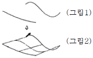
- revolution
- twist
- loft
- sweep
(정답률: 40%)
66. 일반적인 CAD시스템에서 도형을 정의할 때 명령어 LINE과 POLYLINE의 차이점을 정확히 설명한 것은?
- LINE은 하나의 직선 세그먼트(segment)만 그릴 수 있고 POLYLINE은 여러 직선 세그먼트를 그릴 수 있다.
- 두 명령어 모두 여러 직선 세그먼트를 그릴 수 있으나 LINE은 각각의 세그먼트를 별개의 객체로 취급하고 POLTLINE은 전체를 하나의 객체로 취급한다.
- LINE은 2차원에서 사용하는 것이고 POLYLINE은 3차원에서 사용하는 명령어이다.
- LINE과 POLYLINE은 동일한 명령어이다.
(정답률: 51%)
67. 도형을 원점에 대한 점대칭에 의하여 그리려고 한다. 변황 Matrix가 옳게 표시된 것은?
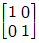
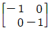
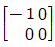
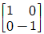
(정답률: 41%)
68. 컴퓨터의 통신속도를 나타내는 단위는?
- BPI
- BPT
- MIPS
- BPS
(정답률: 47%)
69. 다음 변환 행렬식의 요소가 a ＞ l , d ＜ l , b = c = 0 인 경우 나타나는 기하학적 변환으로 알맞은 것은?
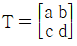
- x 방향으로 확대, y 방향으로 축소
- x, y 방향으로 확대
- x 방향으로 축소, y 방향으로 확대
- x, y 방향으로 축소
(정답률: 32%)
70. 그림은 어떤 형체의 정면도와 우측면도를 표현한 것이다. 평면도의 투상으로 옳지 않은 것은?
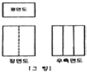
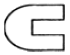
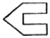
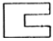
(정답률: 66%)
71. 스프링의 제도에 대한 설명으로 옳지 않은 것은?
- 스프링의 종류와 모양만을 도시할 경우에는 스프링 재료의 중심을 굵은 실선으로 그린다.
- 겹판 스프링은 스프링판이 수평한 상태에서 그리는 것을 원칙으로 한다.
- 특별한 단서가 없는 한 모두 오른쪽 감기로 도시한다.
- 코일 스프링은 하중이 가해진 상태에서 그린다.
(정답률: 46%)
72. 다음 요소 중 길이방향으로 단면하여 도시할 수 있는 것은?
- 풀리
- 작은 나사
- 볼트
- 리벳
(정답률: 38%)
73. 유니파이 나사에서 호칭치수 3/8인치, 1인치 사이에 12산의 보통나사가 있다. 표시방법으로 옳은 것은?
- 8/3 - 12 UNC
- 3/8 - 12 UNF
- 3/8 - 12 UNC
- 8/3 - 12 UNF
(정답률: 40%)
74. 축이
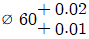
이고, 구멍이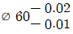
인 끼워맞춤에서 최대 죔새는?(오류 신고가 접수된 문제입니다. 반드시 정답과 해설을 확인하시기 바랍니다.)- 0.01
- 0.02
- 0.03
- 0.04
(정답률: 24%)
75. 점 P1(6.3)을 원점을 중심으로 90° 반시계 방향으로 회전 시킬때 얻어지는 점의 좌표는?
- (-3,6)
- (3,-6)
- (-6,3)
- (6,-3)
(정답률: 36%)
76. 직선이나 곡선 등은 화소(pixel)들을 이용하여 컴퓨터 화면에 그려진다. 직선이나 곡선들을 화소들의 접합으로 나타내는 계산을 무엇이라고 부르는가?
- Scan-conversion
- Clipping
- Window-to-viewport transformation
- Hidden line removal
(정답률: 19%)
77. 다음 중 Bezier 곡선의 성질에 해당되지 않는 것은?
- 곡선의 차수는 (조정점의 개수-1) 이다.
- 곡선은 볼록포 (convex hull) 안에 위치한다.
- 한 개의 조정점을 움직이면 곡선 일부의 모양만이 변한다.
- 곡선 시작점에서 접선은 처음 두 개의 조정점을 직선으로 연결한 것과 방향이 같다.
(정답률: 52%)
78. 축 방향으로 본 모양을 도시할 때 기어의 이뿌리원을 그리는데 사용되는 선의 종류는?
- 가는 1점 쇄선
- 가는 파선
- 가는 실선
- 굵은 실선
(정답률: 36%)
79. 제품의 모델(model)과 그에 관련된 데이터 교환에 관한 표준 데이터 형식이 아닌 것은?
- STEP
- IGES
- DXF
- SAT
(정답률: 56%)
80. 재료기호의 중간부분 문자이다. 단조품을 뜻한는 것은?
- F
- C
- K
- 8W
(정답률: 43%)
주어진 문제에서 매분 300회 회전하므로 매초당 5회전을 하게 된다. 따라서 N = 5 × 60 = 300이다.
전달동력을 구하기 위해서는 전단응력 τ를 구해야 한다.
τ = G × γ × r, 여기서 G는 전단탄성계수, γ는 비틀림각, r은 축의 반지름이다.
주어진 문제에서 비틀림각은 1m당 1°이므로 1m당 0.01745 라디안의 비틀림각이 생긴다. 따라서 γ = 0.01745 라디안/m 이다.
반지름 r은 6/2 = 3cm = 0.03m 이다.
따라서 τ = 80 × 0.01745 × 0.03 = 0.0417 Gpa 이다.
전달동력 P = 2πNT/60 × τ = 2π × 300 × 1/60 × 0.0417 = 0.130 KW 이다.
단위를 KM으로 바꾸면 0.130/1000 = 0.00013 KM 이므로, 정답은 0.00013 KM이다.
하지만 보기에서는 소수점 이하를 버리고 정수로 표기하였으므로, 0.00013을 1000으로 곱한 후 반올림하여 정수로 표기하면 55.8이 된다.